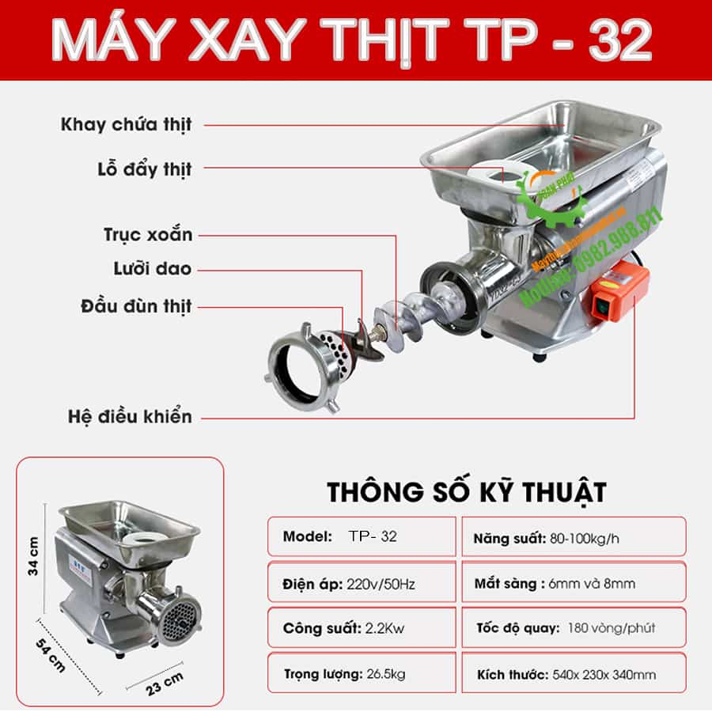
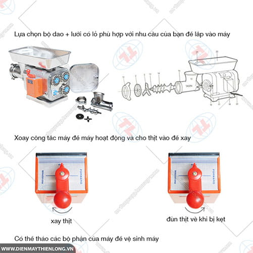

Cấu tạo máy xay thịt công nghiệp
Tân Minh Group
24/06/2024 13:00 11
Cối xay thịt công nghiệp là
thiết bị không thể thiếu trong các khu bếp của nhà hàng, quán ăn, siêu
thị, cơ sở chế biến thực phẩm. Để hiểu rõ hơn về nguyên lý hoạt động
và hiệu quả sử dụng của máy, bài viết này sẽ đi sâu vào chi
tiết cấu tạo các bộ phận chính của máy xay thịt công nghiệp.

Cấu tạo chi tiết máy xay thịt công nghiệp
1. Động cơ:
- Công suất và vai trò: Động cơ là bộ phận quan
trọng nhất, cung cấp năng lượng cho toàn bộ máy hoạt động. Công suất
động cơ thường dao động từ 1HP đến 5HP, phù hợp với nhu cầu xay thịt
đa dạng. Động cơ khỏe giúp máy xay nhanh, nhuyễn và tiết kiệm thời
gian.
- Các loại động cơ phổ biến:
- Động cơ dây đồng: Hoạt động êm ái, ít tiếng ồn, giá thành hợp
lý.
- Động cơ cảm ứng: Khả năng vận hành ổn định, tuổi thọ cao, tiết
kiệm điện.
2. Trục xoắn:
- Cấu tạo và chức năng: Trục xoắn là bộ phận có
dạng xoắn ốc, được làm bằng thép không gỉ. Chức năng chính của trục
xoắn là đẩy thịt vào dao xay, tạo lực ép để xay nhuyễn thịt.
- Các loại trục xoắn trên thị trường:
- Trục xoắn liền: Thích hợp cho các loại máy xay thịt công suất
nhỏ.
- Trục xoắn rời: Dễ dàng tháo lắp, vệ sinh, phù hợp cho các loại
máy xay thịt công suất lớn.
3. Dao xay thịt:
- Phân loại dao xay theo hình dạng, số lượng cánh:
- Dao 2 cánh: Xay thịt thô, thích hợp cho giò chả, xúc xích.
- Dao 3 cánh: Xay thịt vừa.
- Dao 4 cánh: Xay thịt nhuyễn.
- Vật liệu chế tạo dao xay: Dao xay thịt thường
được làm bằng inox 304 hoặc thép cứng, đảm bảo độ sắc bén, độ bền
cao và an toàn vệ sinh thực phẩm.
4. Mặt sàng:
- Ảnh hưởng của mặt sàng đến độ mịn của thịt xay:
Kích thước lỗ trên mặt sàng quyết định độ mịn của thịt xay. Lỗ càng
nhỏ, thịt xay càng nhuyễn.
- Kích thước mặt sàng phổ biến:
- Mặt sàng 5mm: Xay thịt thô.
- Mặt sàng 7mm: Xay thịt vừa.
- Mặt sàng 10mm: Xay thịt nhuyễn.
5. Cối xay:
- Chất liệu chế tạo cối xay: Cối xay thường được
làm bằng inox hoặc nhôm. Inox có độ bền cao, dễ vệ sinh, an toàn vệ
sinh thực phẩm. Nhôm nhẹ hơn, giá thành rẻ hơn nhưng độ bền không
bằng inox.
- Dung tích và thiết kế cối xay: Dung tích cối xay
phổ biến từ 5 lít đến 20 lít, đáp ứng nhu cầu sử dụng đa dạng. Thiết
kế cối xay dạng phễu giúp dễ dàng nạp liệu và vệ sinh.
6. Phễu nạp liệu:
- Kích thước và dung tích phễu nạp: Kích thước phễu
nạp liệu phải phù hợp với cối xay. Dung tích phễu nạp liệu thường
dao động từ 2kg đến 5kg.
- Chất liệu chế tạo phễu nạp: Phễu nạp liệu thường
được làm bằng inox hoặc nhựa. Inox có độ bền cao, dễ vệ sinh, an
toàn vệ sinh thực phẩm. Nhựa nhẹ hơn, giá thành rẻ hơn nhưng độ bền
không bằng inox.
7. Các bộ phận khác:
- Công tắc, nút điều khiển: Giúp điều chỉnh tốc độ
xay, đảo chiều xay, khởi động/tắt máy.
- Chân đế, bánh xe di chuyển: Giúp máy xay thịt ổn
định, dễ dàng di chuyển.
- Khay chứa thịt xay: Chứa thịt xay sau khi được
xay.

Nguyên lý hoạt động
Máy xay thịt công nghiệp, công cụ quen thuộc trong các bếp ăn lớn,
nhà máy chế biến thực phẩm, hoạt động dựa trên nguyên lý đơn giản mà
hiệu quả. Hãy cùng tìm hiểu quy trình này:
- Khởi động năng lượng: Bật nguồn điện, động cơ bên trong máy được
kích hoạt, sẵn sàng cho quy trình xay thịt.
- Trục dao vận hành: Trục cốt gắn liền với lưỡi dao bắt đầu quay,
tạo lực cần thiết để xay nhuyễn thịt.
- Xử lý nguyên liệu: Thái thịt thành miếng nhỏ, cho vào phễu nạp của
máy xay.
- Lưỡi dao cắt thịt: Lưỡi dao sắc bén quay, cắt nhỏ thịt thành những
phần đều nhau.
- Lực ly tâm hoạt động: Quá trình quay tạo lực ly tâm, hút thịt vào
sâu bên trong buồng xay.
- Thịt được xay nhuyễn: Lực ly tâm kết hợp áp lực từ trục dao, xay
nhuyễn thịt, đảm bảo độ mịn mong muốn.
- Hoàn tất: Quan sát độ mịn của thịt, bấm nút dừng để tắt máy, kết
thúc quá trình xay.
Lưu ý:
- Nên sử dụng đúng loại thịt phù hợp với máy xay.
- Không nên cho quá nhiều thịt vào máy cùng lúc để đảm bảo hiệu quả
xay tốt nhất.
- Vệ
sinh máy xay thịt sau mỗi lần sử dụng để đảm bảo vệ sinh an
toàn thực phẩm.
Social share
Bài viết liên quan
Comments
Chưa có comment.
Đề lại Comment